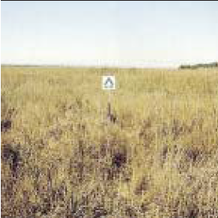
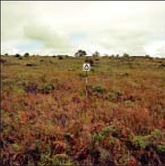

|
Fire Behavior Fuel Model GR3 (103) -- Low Load, Very Coarse, Humid Climate Grass (Dynamic) |
Scott and Burgan (2005) classify Fire Behavior Fuel Model GR3 (103) in the Grass Fuel Type and describe it as follows:
The primary carrier of fire in GR3 is continuous, coarse, humid-climate grass. Grass and herb fuel load is relatively light; fuel bed depth is about 2 feet (0.6 meters). Shrubs are not present in significant quantity to affect fire behavior.
Fuel model parameters are available by viewing the Fuel Model Table of Parameters or right-clicking on the fuel model description in the Input Guide window and selecting View parameters.
Scott and Burgan's (2005) photographs on page 28 are examples of fuels fitting this model.
|  | Scott and Burgan (2005) Photo 1, Fire Behavior Fuel Model 103. |
|  | Scott and Burgan (2005) Photo 2, Fire Behavior Fuel Model 103. |